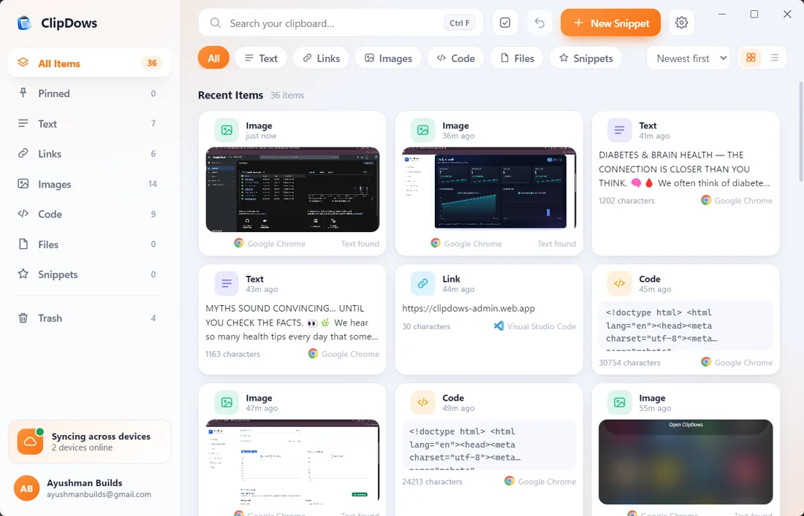
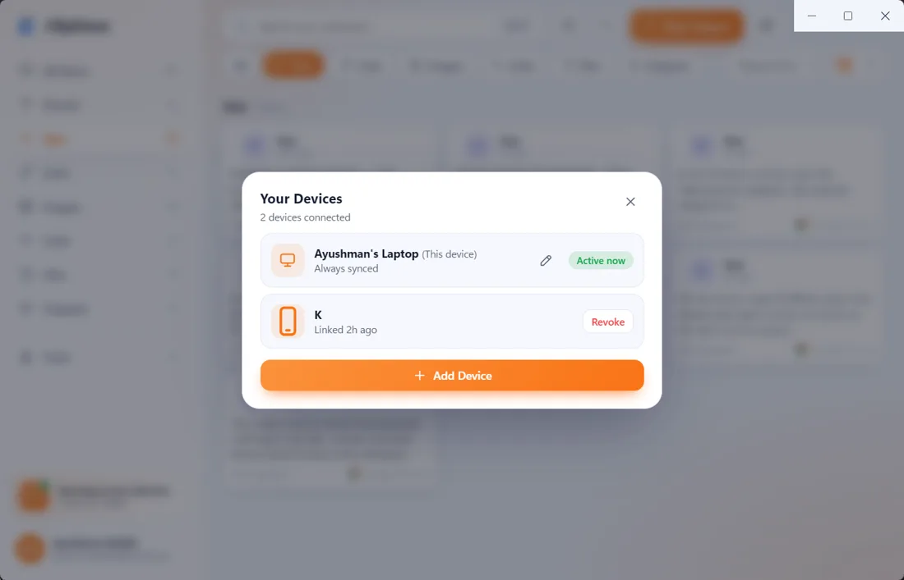
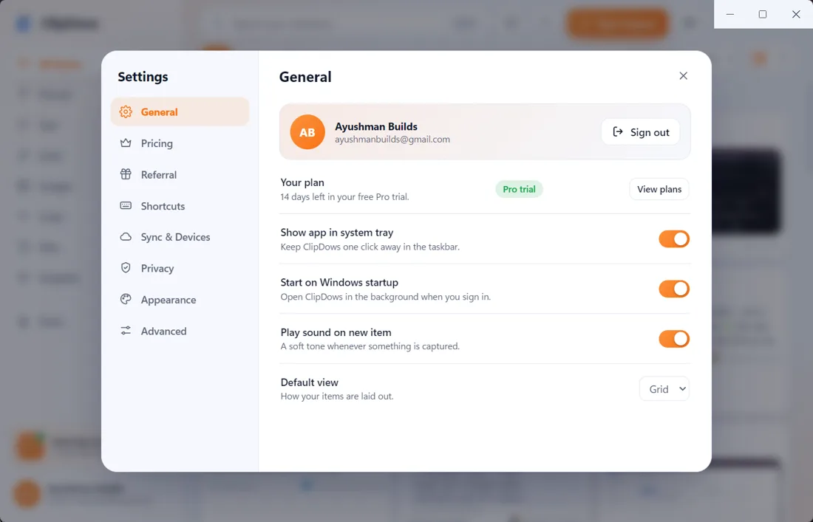
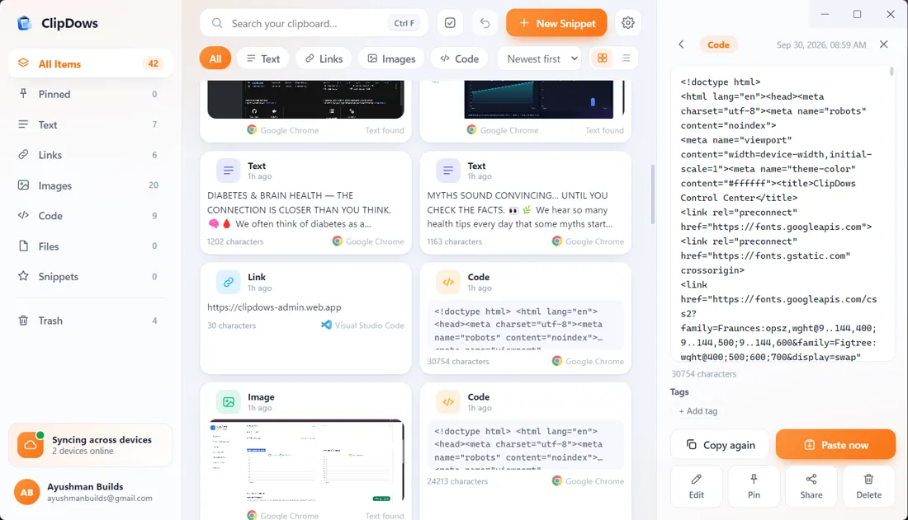
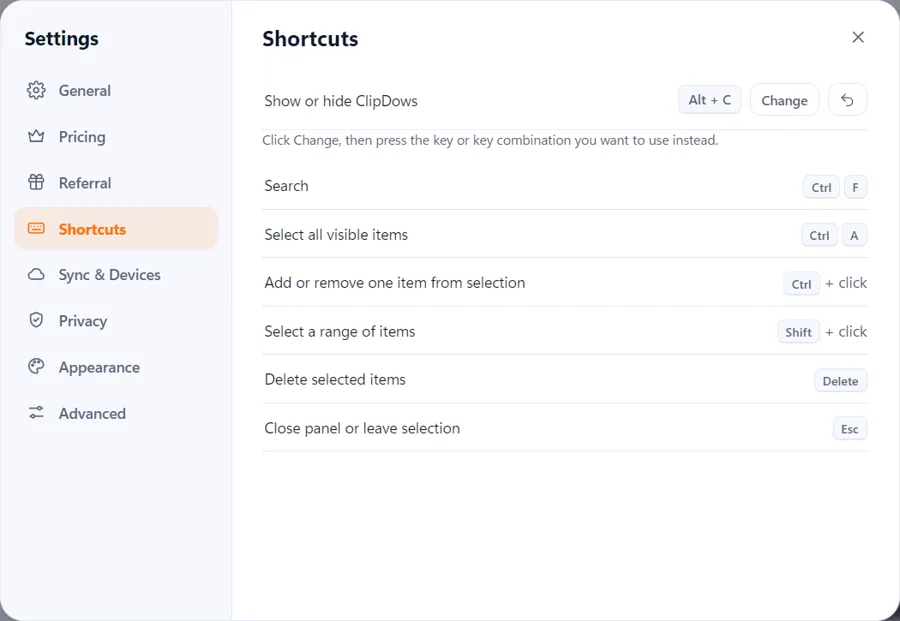
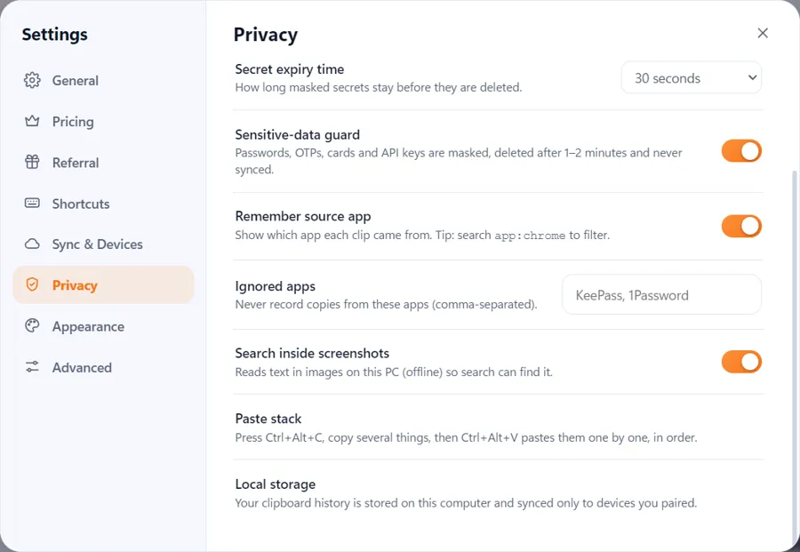
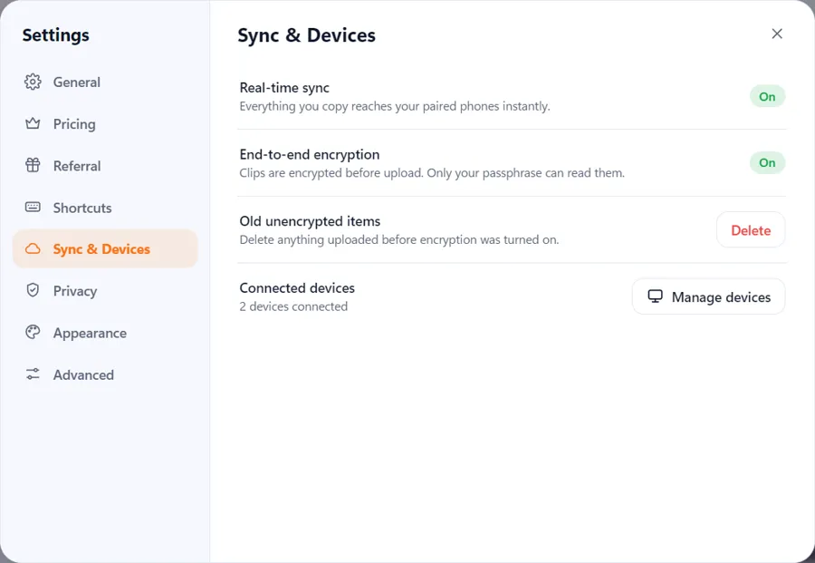
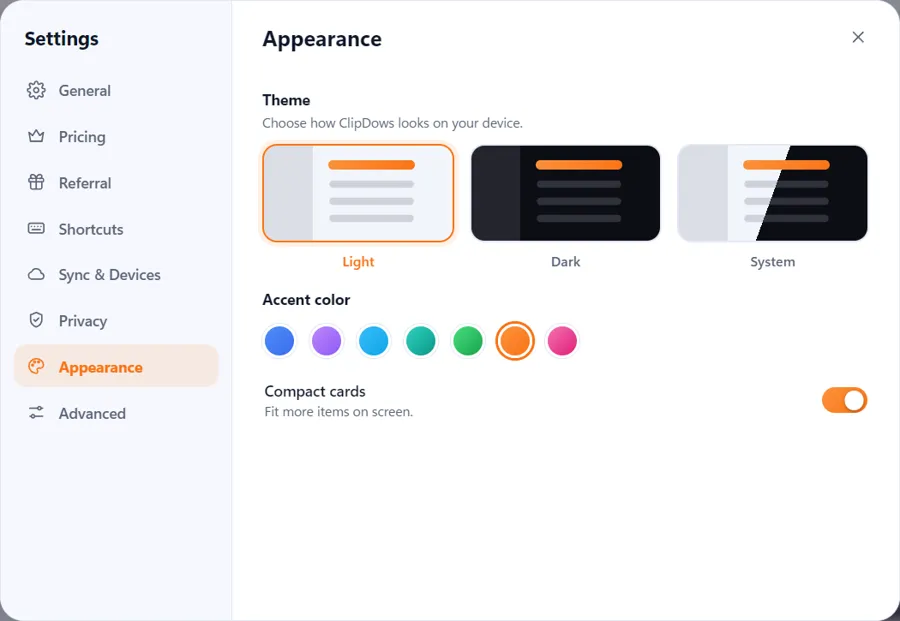
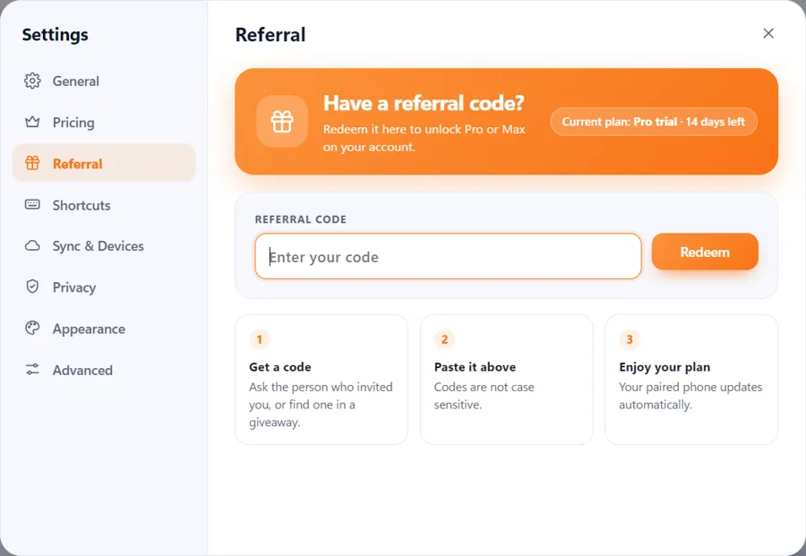

Windows Clipboard Manager.Copy once. Find it anywhere.
ClipDows is a Windows clipboard manager that keeps your clipboard history searchable, finds text inside screenshots, speeds up repetitive work with Snippets and Paste Stack, and syncs clips securely with your paired phone.
Every new account starts with a 14-day Pro trial. Free plan available. Windows 10 or 11, 64-bit.
just now · from PC
What is ClipDows?
ClipDows is a clipboard manager for Windows. It saves everything you copy (text, links, images, code and files), makes it searchable, even the text inside screenshots, and syncs it end-to-end encrypted to your phone.
ClipDows at a glance
Direct answers for people looking for a Windows clipboard manager, clipboard history, screenshot text search, or PC-to-phone clipboard sync.
What is ClipDows?
ClipDows is a clipboard manager for Windows 10 and Windows 11. It stores copied text, links, images, code, files and snippets so you can search and reuse them later.
Can it search screenshots?
Yes. ClipDows can read text in images on your PC so you can find a screenshot by the words it contains.
Can I sync clipboard data to my phone?
Yes. Pair the Windows app with the ClipDows phone web app and supported clips can sync between the paired devices.
Is there a free version?
Yes. ClipDows has Free, Pro and Max plans. New accounts start with a 14-day Pro trial.
Your clipboard finally has a memory.
Stop re-copying. Everything you copy is saved, sorted, and one search away.
Everything, sorted for you
Text, links, images, code and files land in their own tabs. Switch between grid and list view, pin what matters, and restore anything from Trash.

Search inside screenshots
ClipDows reads the text in your images, so you find that screenshot by what it says.
Pair your phone in one scan
Open the ClipDows PWA on your phone, scan the code from the desktop app, and your clips follow you.

Quiet in the tray, ready when you are
ClipDows sits in your system tray, starts with Windows and captures in the background. Turn the capture sound on or off, and pick your default view.

Speed tools
Work faster with what you already copied.
Private by default
Passwords, OTPs, cards and API keys are masked and never synced. Ignore apps like password managers, and choose how long secrets stay.
Built for people who copy all day.
Four tools that turn your clipboard into a workspace.
Type a short trigger. Get the whole reply.
Save the messages you send every day as Snippets. Add variables like today's date, and expand them with a trigger.
Hi {name}, thanks for reaching out!
I'll send the quote by {date}.Copy three things. Paste them in order.
Press Ctrl+Alt+C, copy several things, then press Ctrl+Alt+V to paste them one by one, in order. Fill a form without switching windows six times.
Fix copied text in one click.
Instant actions clean up what you copied. Format messy JSON and more, right from the clip.
{"id":2041,"paid":true,"items":[{"sku":"A1","qty":2}]}Go back to what you copied last week.
Time machine lets you scrub through your clipboard history and bring back any clip.
https://clipdows-admin.web.app
Open any clip. Act on it.
Click a clip to preview it in full. Copy it again, paste it straight into the app you were using, edit it, pin it, share it or tag it. Images can be downloaded.

Keyboard first. Mouse optional.
Every action is a keystroke away, and you can change the show-or-hide shortcut.

Private by design.
Clips are encrypted before they leave your PC, and only your passphrase can read them. Your history stays on your computer and syncs only to phones you paired.



Make it yours.
Choose Light, Dark or System, pick an accent color, and switch on compact cards to fit more on screen. Try it on this page.
Using ClipDows day to day
There's nothing to learn. Copy like you always do.
Copy as usual
Press Ctrl+C anywhere. A soft sound confirms ClipDows captured it, and the item appears at the top of All Items.
Find it fast
Press Ctrl+F to search your history, or filter by Text, Links, Images, Code, Files or Snippets. Sort by newest first.
Keep what matters
Pin items you reuse. Turn common text into Snippets with New Snippet, and queue several items in the Paste stack to paste them in order.
Grab it on your phone
Copied on your PC, open ClipDows on your phone and it's there. Copied on your phone, it appears on your PC.
Clean up
Deleted something by mistake? Open Trash to restore it. Sensitive clips expire on the schedule you set.
Stay in control
Manage linked devices from Sync & Devices, and revoke any phone with one click.
Install in about two minutes.
Set up Windows first, then link your phone.
Download the installer
Download
ClipDows-Setup-0.1.0.exe(about 110 MB) straight from our GitHub release. It works on Windows 10 and 11, 64-bit.Run the installer
Open the file, choose your install folder and follow the prompts. If Windows shows "Windows protected your PC", choose
More info, thenRun anyway. This early release isn't code-signed yet.Sign in
Open ClipDows and sign in with Google. Your 14-day Pro trial starts automatically.
Let it run
ClipDows lives in your system tray and starts with Windows. Change this anytime in Settings, then General.
Open the phone app
Visit the ClipDows web app on your phone in Chrome or Safari.
Add it to your home screen
In Chrome, tap the menu and choose
Install app. In Safari, tap Share, thenAdd to Home Screen.Pair with your PC
On Windows, open Settings, then Sync & Devices, then
Add Device. Scan the QR code, or enter the pairing code, on your phone.Copy and check
Copy something on your PC. It shows up on your phone, and the device list shows both as connected.
Start free. Upgrade when you outgrow it.
New accounts get 14 days of Pro. Upgrade from Settings, then Pricing. Payments are handled by Razorpay, and ClipDows never sees or stores your card details.
| Free | Pro | Max | |
|---|---|---|---|
| Clipboard history | 100 clips | 1,000 clips | Unlimited |
| Pinned items | 5 | Unlimited | Unlimited |
| Snippets | 10 | 100 | Unlimited |
| Paste stack | 5 items | Unlimited | Unlimited |
| Search inside screenshots | 5 / month | Unlimited | Unlimited |
| Linked phones | 1 | 3 | 10 |
| Synced clips | 25 | 200 | 1,000 |
| Image sync | – | ✓ | ✓ |
| Instant actions | Basic | All actions | All actions |
| App filters, secret expiry, data export | – | ✓ | ✓ |
| Snippet variables and triggers | – | – | ✓ |
| Time machine | – | – | ✓ |
Have a referral code?
Redeem it in Settings, then Referral, to unlock Pro or Max. Your paired phone updates automatically.

Questions before you buy
What is ClipDows?
ClipDows is a clipboard manager for Windows. It saves text, links, images, code and files you copy, lets you search them (even text inside screenshots), and syncs them to your phone.
Is there a free plan?
Yes. Free keeps 100 clips and links one phone. Every new account also gets 14 days of Pro.
How does phone sync work?
Open ClipDows on your phone, scan the QR code from the desktop app, and your clips sync between both.
Is my clipboard data private?
Clips are encrypted before upload and only your passphrase can read them. Passwords, OTPs, cards and API keys are masked, deleted automatically and never synced. Your history is stored on your PC and synced only to devices you paired.
Can ClipDows search text inside screenshots?
Yes. It reads text in images on your PC, offline, so search can find them. Free includes 5 searches a month, and Pro and Max are unlimited.
Which keyboard shortcuts does it have?
Alt+C shows or hides ClipDows and Ctrl+F searches. Press Ctrl+Alt+C to start the Paste stack, copy several things, then Ctrl+Alt+V pastes them one by one, in order. You can change the show-or-hide shortcut.
Can I stop it from saving certain apps?
Yes. Add apps like a password manager to Ignored apps and ClipDows never records copies from them. Pro and Max also let you set how long secrets stay.
How do I get Pro or Max?
Upgrade from Settings, then Pricing, or redeem a referral code in Settings, then Referral. Payments are handled by Razorpay, and ClipDows never sees or stores your card details.